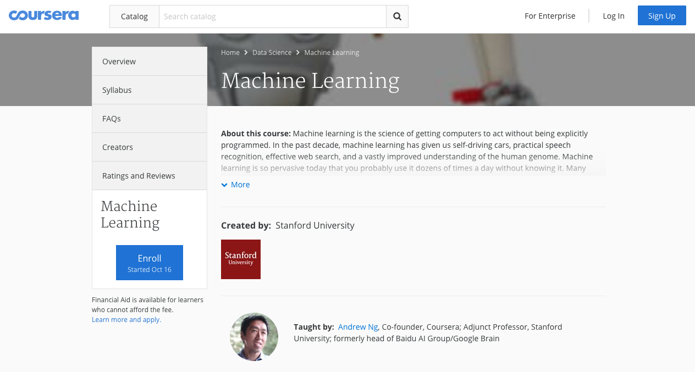
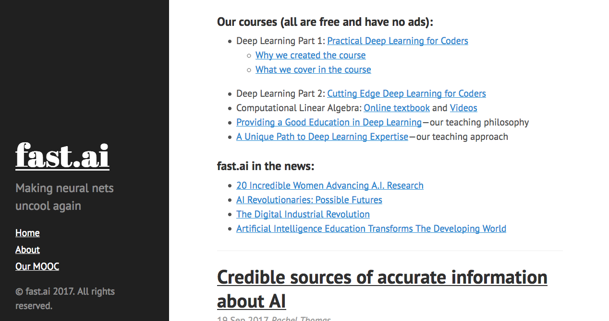
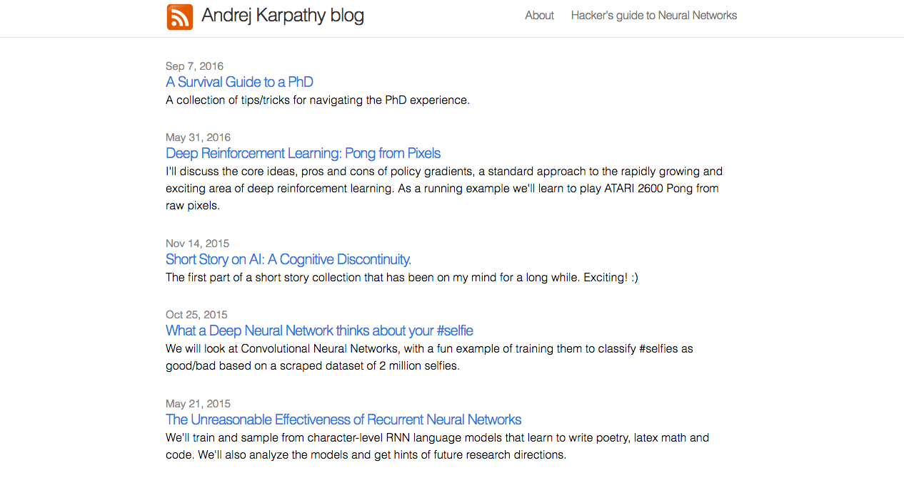
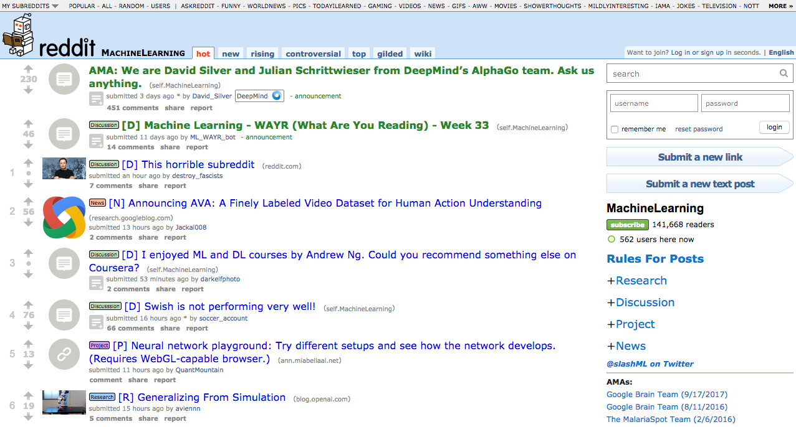
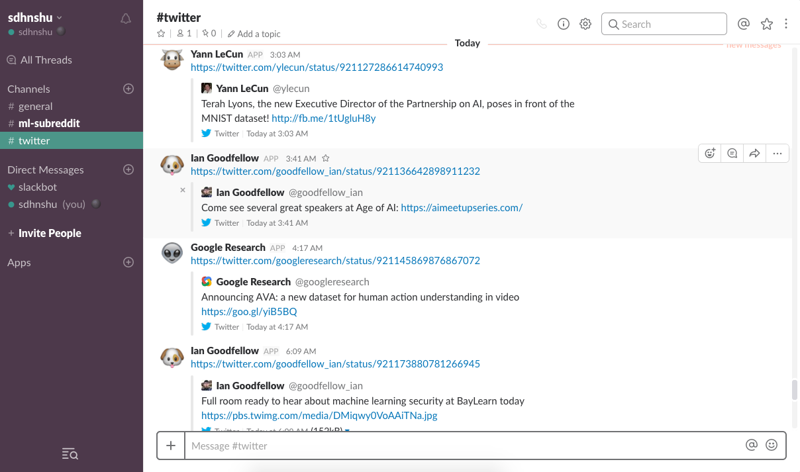
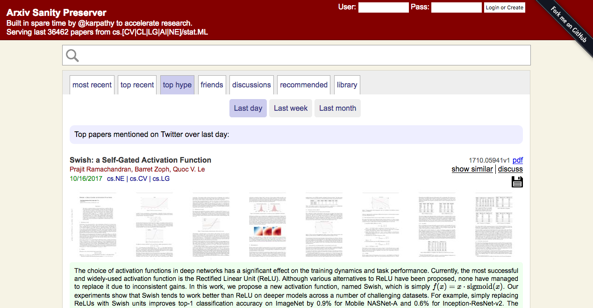

I got interested in deep learning almost a year ago in December 2016. I was searching for something cool for my final year project. This was the thing at that time.
So I started searching for ways to learn as I knew absolutely nothing about ML or Python. The one thing that I found, recommended everywhere was the Andrew Ng’s 2008 Coursera course. He’s the founder of Coursera and this was the first course that he put on Coursera (in 2008!!). So I did that course. It has all the basic Math necessary for Machine Learning and is really really important if you wanna know what is going underneath the ML libraries. Highly recommended.

Then I did the Intro to ML course by the founder of Udacity, ex-VP of Google: Sebastian Thrun. There you’ll get familiar with Python and a basic ML library: scikit learn. It’s a new age course where they teach you how to get around python libraries (which is a vast corpus). I found it really helpful as it got me straight into python with ML.
In the meantime, I was also watching Siraj Raval’s videos (I was one of his 20k subscribers) which went straight over my head btw. (That guy is more hype, less knowledge). You don’t get much to learn from him but can get the idea of the scope of the deep learning scene.
While I finished all these things, Siraj mentioned in one of his videos that he was planning a Nanodegree. After a couple of days, I saw a new nano degree on Udacity called “Deep Learning Nanodegree Foundation”. I took it immediately. It was 20k Rupees at that time. I did not regret paying that much at that time. But by the time you are reading this, there might be several other deep learning courses on the internet. At the time of this writing, I really like the Fast.ai course. It takes you through the practicality of it.

Also, one really important youtube courses that helped me a lot was Andrej Karpathy’s CS231n Winter 2016. He’s one of the pioneers in deep learning. He was a Ph.D. student at Stanford. He has also been the head of Open AI, backed by Elon Musk, and has now moved to Tesla as the self-driving head. A really great guy. His blog is really helpful. Check it out at this link

One more thing that helped me a lot (and is still helping me a lot) is following these people on Twitter. You can get really great information from these pioneers from their twitter accounts. The people I follow on twitter are:
- Andrej Karpathy
- Yann LeCun (Founder of CNNs)
- Fe Fe Li (Andrej’s mentor)
- Sebastian Thrun
- Andrew Ng
- Soumith Chintala (Head of FAIR, PyTorch)
- Ian Goodfellow (Founder of GANs)
- Elon Musk (coz he’s awesome)
- Demmis Hassabis (Founder of DeepMind, now a part of Google)
- Google Research
- Deep Mind
- Open AI
- Baidu Research
- Facebook Artificial Intelligence and Reseach
- Tensorflow
- PyTorch
- Distill publication (The best publication on deep learning)
- Geoffrey Hinton (if he were there I would follow him)
- Yoshua Bengio (if he were there I would follow him)
One more place that you can get the first-hand knowledge about what’s happening in the community is the Reddit channel: /r/MachineLearning

If you don’t use twitter or Reddit but use slack, you can use my slack group: sdhnshu.slack.com. I have channels where you get news from all these guys via twitter and also the most important news from the hot section of /r/MachineLearning. It’s a place to be for all the ML news. I personally use it and you can use it too for all the news in a single place.

Since then, I’ve been able to implement my own things by reading their papers on arxiv.org. Also to keep track of all the papers coming in day by day you can use Andrej’s tool: Arxiv Sanity Preserver. It uses ML to sort papers and recommends you relevant papers. Amazing work Andrej.

Hope my journey inspires you to get into deep learning as the more the people are into it, the better.